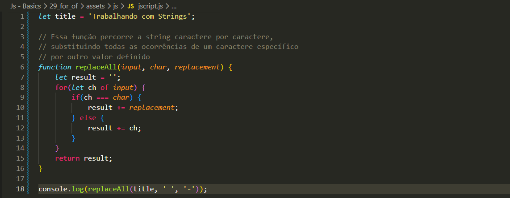

For Of
Intro
Anteriormente vimos como utilizar o for para substituir os espaços por hífens (-). Agora iremos ver outra forma de fazer isso utilizando o for of, que é mais simples para percorrer strings.
Anteriormente vimos como utilizar o for para substituir os espaços por hífens (-). Agora iremos ver outra forma de fazer isso utilizando o for of, que é mais simples para percorrer strings.
Neste exemplo, criamos uma função com a mesma funcionalidade da anterior, porém utilizando o for of. A principal diferença é que agora percorremos diretamente cada caractere da string, sem precisar usar índice.

Utilizamos o for quando precisamos de mais controle, como definir o ponto inicial, final ou o passo do loop. Nesse caso, acessamos os valores através do índice, usando a sintaxe variável[indice].
O for of é utilizado quando queremos apenas percorrer os valores de forma direta, sem precisar trabalhar com índices. Ele já retorna cada elemento da string ou array, tornando o código mais simples e fácil de ler.